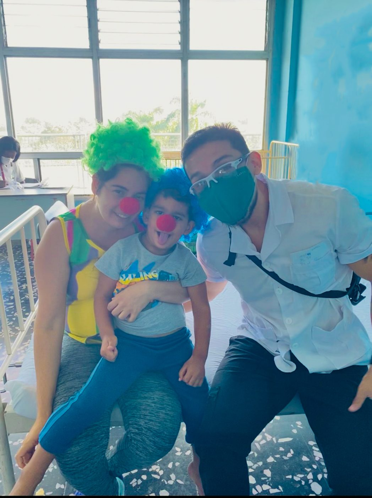

Transparency & Collective Impact
Every dollar and every pallet our coalition moves is recorded in PAMA’s financial books. These figures come straight from those records.
Total support since 2024
$4,005,020.78
Cash donations, memberships, grants and donated medical supplies, 2024 through October 2026.
2024
$1,669.00- Cash donations
- $1,645.00
- Memberships
- $24.00
2025
$2,078,443.79- Donated medical supplies
- $2,035,729.99
- Cash donations
- $36,561.09
- Grants
- $2,200.00
- PayPal and Stripe donations
- $1,827.26
- Website donations
- $1,275.45
- Memberships
- $850.00
2026 (through October)
$1,924,907.99- Donated medical supplies
- $1,905,846.48
- Cash donations
- $18,701.51
- Memberships
- $360.00
Our work began in 2024 with $1,669 in community support. In 2025, partners, suppliers and individual donors helped our coalition mobilize more than $2 million in donated medical supplies. In 2026, that support has continued with $1.9 million in medical aid so far this year.
Where support goes, by clinical area
Donated supplies and program funds are tracked by the clinical area they strengthen. Totals cover 2024 through October 2026.
| Area | Amount | Share | What it supported | |
|---|---|---|---|---|
| Rural Medicine | $1,197,351.91 | 29.9% | IV fluids, diagnostics, injection supplies and general ward care for rural and frontier health systems. | |
| Surgery | $1,086,721.51 | 27.2% | Sutures, operating-room supplies, vascular access, wound care and anesthesia essentials. | |
| Laboratory | $525,605.26 | 13.1% | Specimen and blood collection, hematology and microbiology supplies for community clinics. | |
| Respiratory | $409,612.50 | 10.2% | Airway management, tracheostomy, oxygen, suction and filtration equipment. | |
| Gastrointestinal Care | $244,465.00 | 6.1% | Diagnostic and therapeutic endoscopy supplies and scope maintenance. | |
| Infection Control & PPE | $239,145.52 | 6.0% | Protective equipment, antiseptics, hand hygiene and clinical safety materials for frontline providers. | |
| Nephrology | $104,730.01 | 2.6% | Dialysis, urology and irrigation supplies for high-risk kidney patients. | |
| Infant & Maternal Health | $69,223.00 | 1.7% | Neonatal, obstetric and lactation supplies for mothers and infants across the Caribbean and Latin America. | |
| Nutrition & Food Aid | $47,126.83 | 1.2% | Enteral nutrition and food aid for high-risk populations. | |
| Pain Medicine | $46,501.00 | 1.2% | Essential pain-relief therapies for underserved communities. | |
| Disaster Medicine | $22,462.00 | 0.6% | Emergency response, crisis stabilization and rapid medical relief. | |
| Administrative | $5,526.26 | 0.1% | Compliance, logistics and the operations that keep the coalition running. | |
| Coalition Building | $3,723.46 | 0.1% | Partnerships, coordination and multi-institutional collaboration. | |
| Total | $4,002,194.26 | 100% |
How cash donations are spent
Of every cash dollar PAMA has spent, 93.7 cents went directly to medical supplies.
| Category | Spent | Share |
|---|---|---|
| Medical supplies | $35,935.75 | 93.7% |
| Check disbursements | $787.03 | 2.1% |
| Bank and processing fees | $775.00 | 2.0% |
| Software and outreach | $530.71 | 1.4% |
| Office and administration | $208.18 | 0.5% |
| Travel and fuel | $120.49 | 0.3% |
| Total | $38,357.16 | 100% |

Your support at work: Quetzaltenango, Guatemala
In March 2025, grassroots donors funded diagnostic tools for rural clinics in Quetzaltenango, purchased from a local supplier in the region:
- 8 neurological examination kits
- 9 stethoscopes
- 1 otoscope and ophthalmoscope kit
- 100 disposable syringes
- 3 manual blood pressure cuffs
- 3 wrist blood pressure monitors
- 10 digital thermometers
- 9 forehead strip thermometers
The kits were valued at Q8,364 (about $702). A $3,520 ultrasound system followed, giving clinics in the region on-site imaging for maternal and emergency care.
See how we measure impact
Warehouse & Deployment Summary
PAMA’s logistics program runs from a 5,000 sq ft humanitarian warehouse designed for high-density storage, rapid palletization and transparent chain-of-custody documentation. In 2025, this facility supported the assembly and dispatch of more than $1.95 million in essential medical supplies, including surgical consumables, IV solutions, laboratory materials and emergency-care equipment, across 42 pallets of high-relevance medical aid.
Working with NJT Orange County, a logistics partner specializing in humanitarian freight, we strengthened pallet-level documentation and secured delivery to national hospitals, municipal clinics and frontline medical professionals across the Caribbean. Each 2025 deployment earned a High-Impact SSI score (9.0–9.3).
Figures on this page come from PAMA’s financial books as of October 2026. Questions about our finances are welcome at info@pan-american.org.